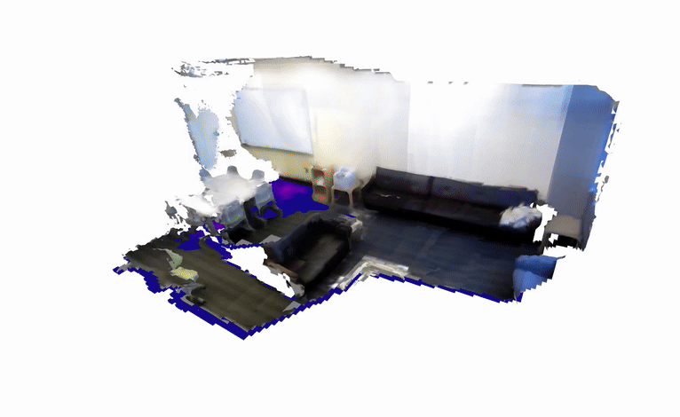

Euclidean Signed Distance Field#
This example demonstrates how to use the Euclidean Signed Distance Field (ESDF) querying functionality in nvblox_torch.
- download_test_dataset:
Launch the example by running:
python3 -m nvblox_torch.examples.esdf.esdf \
--dataset_path <PATH>/sun3d-mit_76_studyroom-76-1studyroom2/ \
--num_frames 100

The code for this example can be found at esdf.py
Details#
In this example we demonstrate how to build and query a Euclidean Signed Distance Field (ESDF) without leaving the GPU.
We first use the first 500 frames of one of the SUN3D sequences to build a TSDF.
This is hidden inside the function get_sun3d_scene_mapper() for brevity.
For details on how to build a TSDF, see the reconstruction example.
The Mapper returned by this function contains the map of the scene as a TsdfLayer.
mapper = get_sun3d_scene_mapper(
dataset_path=args.dataset_path,
voxel_size_m=args.voxel_size_m,
num_frames=args.num_frames,
)
We generate the corresponding ESDF by calling mapper.update_esdf().
mapper.update_esdf()
To query the ESDF, we need some points to query at.
We generate a grid of points that cover an Axis-Aligned Bounding Box (AABB) of the mapped space.
This is performed by the function get_aabb_voxel_center_grid()
.. code-block:: python
query_grid_xyz_m = get_aabb_voxel_center_grid(mapper.tsdf_layer_view())
This function inspects the TsdfLayer to get the extents of the mapped scene.
The extents of the scene are returned as 3D VoxelBlock indices.
Which we convert to 3D voxel coordinates.
min_block_idx, max_block_idx = layer.get_block_limits()
aabb_min_vox = min_block_idx * layer.block_dim_in_voxels
aabb_max_vox = (max_block_idx + 1) * layer.block_dim_in_voxels
We then use torch to generate a 3D meshgrid of points in meters.
# Create a 3D grid of points.
x_linspace = torch.linspace(aabb_min_vox[0],
aabb_max_vox[0],
aabb_max_vox[0] - aabb_min_vox[0] + 1,
dtype=torch.int)
y_linspace = torch.linspace(aabb_min_vox[1],
aabb_max_vox[1],
aabb_max_vox[1] - aabb_min_vox[1] + 1,
dtype=torch.int)
z_linspace = torch.linspace(aabb_min_vox[2],
aabb_max_vox[2],
aabb_max_vox[2] - aabb_min_vox[2] + 1,
dtype=torch.int)
x_grid, y_grid, z_grid = torch.meshgrid(x_linspace, y_linspace, z_linspace, indexing='ij')
query_grid_xyz_vox = torch.stack([x_grid, y_grid, z_grid], dim=-1)
# Voxel units to meters.
query_grid_xyz_m = (query_grid_xyz_vox + 0.5) * layer.voxel_size()
We move the grid to the GPU such that it can be used to query the GPU-based map held by nvblox.
query_grid_xyz_m = query_grid_xyz_m.cuda()
We perform the query by calling mapper.query_differentiable_layer().
sdf_values = mapper.query_differentiable_layer(QueryType.ESDF, query_grid_xyz_m.reshape(-1, 3))
sdf_values = sdf_values.reshape(query_grid_xyz_m.shape[:-1])
Note that we first reshape the 4D grid [H, W, D, 3] to a 2D tensor [H * W * D, 3] where each row is a point to query. We then reshape the output back to the original grid shape [H, W, D], where each voxel now contains the signed distance to the nearest surface in meters.
We detect unsuccessful queries by checking where the ESDF value is set to
constants.esdf_unknown_distance().
valid_mask = torch.logical_not(sdf_values == constants.esdf_unknown_distance())
To visualize the ESDF we iterate through the slices of the grid, and visualize points where the query was successful.
# Loop through the slices and visualize the ESDF.
for slice_idx in slice_idx_range:
# Slice the grid.
slice_mask = valid_mask[..., slice_idx]
slice_xyz = query_grid_xyz_m[..., slice_idx, :]
slice_sdf = sdf_values[..., slice_idx]
# Exclude points that didn't query successfully
slice_xyz = slice_xyz[slice_mask]
slice_sdf = slice_sdf[slice_mask]
# Visualize the ESDF as an open3d voxel grid.
voxel_grid_o3d = to_open3d_esdf_voxel_grid(slice_sdf, slice_xyz, args.voxel_size_m)
...
visualizer.add_geometry(voxel_grid_o3d)
We can also back propogate through this query. See Gradients Example.